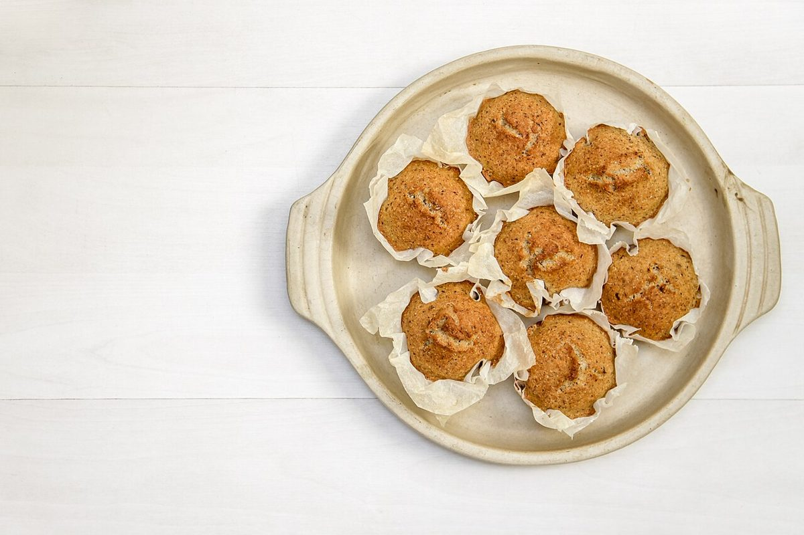

カフェ / 三重県桑名市和泉
SLOWSLOW
三重県桑名市和泉にあるカフェ「cafe SLOW SLOW」のご案内ページです。営業時間やメニューなど、詳しいことは準備中。まずはInstagramをのぞいてみてください。
40拍 / 分
制作側の連想
メトロノームの、いちばん遅い目盛り
制作側は「SLOW SLOW(ゆっくり、ゆっくり)」という屋号の字面から、メトロノームを連想しました。メトロノームは錘を上へずらすほど拍がゆっくりになり、目盛りの最下段にあたるのは1分間に40拍ほどです。そこでこのサイトは、ページ番号を目盛りの40・42・44・46・48に見立て、写真を一拍ずつ並べています。制作側の連想で、お店の理念・由来とは無関係です。
一拍ずつ(イメージ)
1・2・3・4・5・6。
写真は桑名市やお店のものではありません。国外か撮影地不明のフリー素材のイメージです。




ご案内
お店のこと(確認できたものだけ)
| 所在地 | 〒511-0838 三重県桑名市和泉136-1 |
|---|---|
| 電話 | 0594-25-1325 |
| 営業時間 | 準備中 |
| 定休日 | 準備中 |
| ご予約 | 準備中 |
| 駐車場 | 準備中 |
| SNS | Instagram @cafeslowslow |